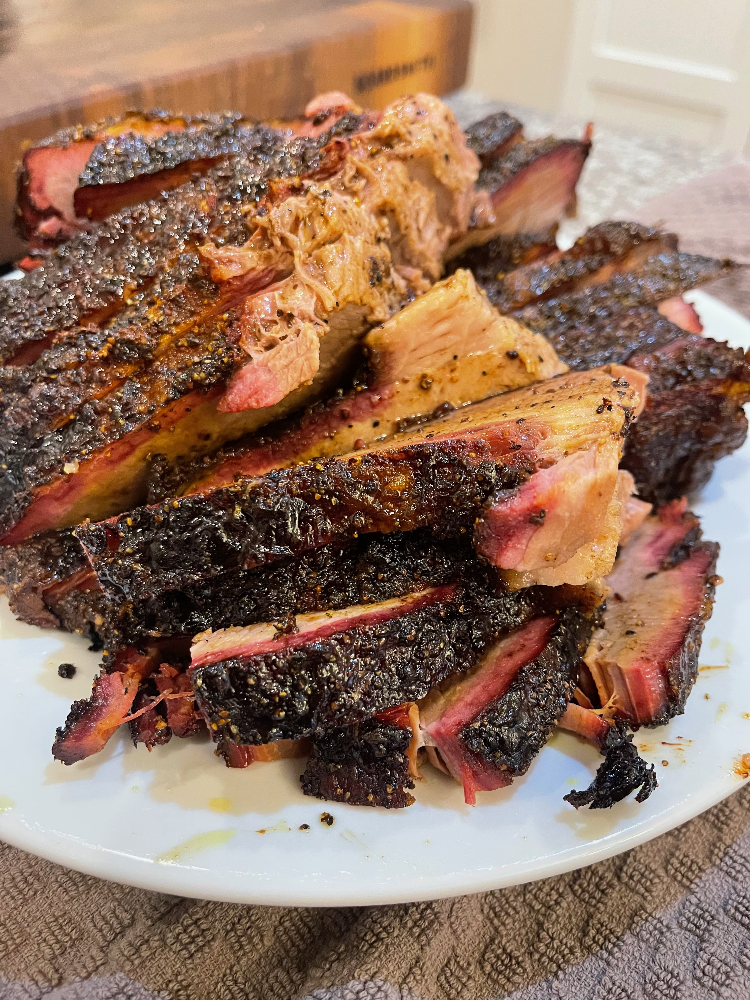

Home
Home
Smoked Brisket

Description
Create a delicious smoked brisket with just a few ingredients and little oversight! We'll go through prepping the brisket and seasoning it, to smoking at a low heat overnight, finishing up the cook the next day with the foil boat method, and then carving the brisket for you to enjoy.
Ingredients
- 1 beef brisket, 10-20 lbs, untrimmed
- 1/4 cup extra virgin olive oil
- 2 tbsp salt
- 2 tbsp black pepper
- 2 tbsp turmeric
Steps
- Preheat your pellet grill to 190° F.
- Trim the fat from the top of the point muscle to expose the meat, and then trim the fat to about 1/4” over the flat muscle.
- Rub the olive oil evenly over the entire brisket to bind the rub to the meat, and then season with the salt and pepper. Apply more or less salt/pepper as needed. The goal is to liberally coat the brisket with the seasoning. Next, apply the turmeric evenly over the brisket and the seasoning. Press the rub into the meat.
- Place the brisket on the top shelf of the pellet grill and smoke overnight for 8-10 hours. Feel free to leave this even longer.
- After cooking overnight, turn the grill up to 250° F and continue smoking until the internal temperature of the meat reaches 160° F - 170° F.
- Remove the brisket from the grill and place on two sheets of heavy aluminum foil. Roll up the excess foil around the brisket to tightly cover the sides of the brisket, forming a boat/lip. Leave the top of the brisket uncovered. Place the brisket back on the top shelf and continue smoking.
- Remove from the smoker once the brisket reaches an internal temperature of 203° F - 205° F and the thermometer feels little resistance when probing into the meat.
- Place in an empty cooler to rest for 1 hour before slicing.
- Place the brisket on a cutting board and slice against the grain in 1/4" thick strips.